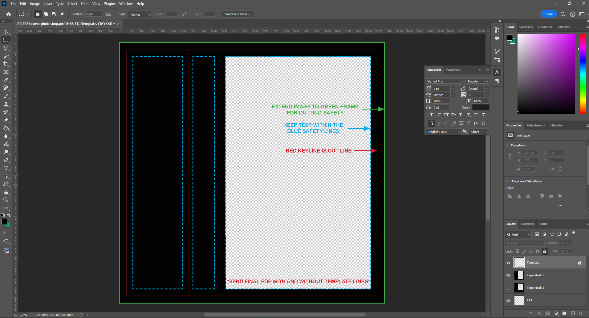

Album Art 101
Why AI Art is Unethical and Detrimental To Your Project
Tools have always been used by humans to accomplish tasks. The rise of
AI software in rendering images is new but already has some concerns
about its ethics and uses. While rendering an image of an old castle
or old wizard for your silly little DS project might seem like the
best course of action, learning how to edit images and text and design
your own cover is much more fulfilling.
AI Art Is Counterproductive For Your Project
Even if you do not have any ethical concerns about AI, using an AI
prompt for artwork will call into question your music if it is human
made. There is already a pushback against AI and people will see the
use of AI and assume your music is also fabricated by prompt
generation. This could or could not be true but the instances we have
seen always begin with AI art since that is the first thing people
see. From a personal anecdote, if I, as a music reviewer, see AI art
in a bandcamp page when looking for new music to feature, I will skip
over things with AI art. A person might or might not care about this
aspect but using AI art will become a distraction and in a small DIY
community will be counterproductive for your project when making your
own design is not that much more effort.
Suggestion For Basic Users
There are many designers out there that will work with you to do album
art. This could be from commissioned art to something basic. If you
just need an image and text you can use this
Canva
album art maker with your own art.
If you really just need something basic for your project and just need
a designer to do something simple for super cheap even free email me
at kaptaincarbon [at] gmail [dot] com and we can
talk. I would rather help people out if they are struggling and want
to get their project off the ground.
Note: The Canva album art maker will be able to download to a PNG that
will be the correct size for Bandcamp.
Suggestions for advanced users
There are no rules when it comes to design. You can handdraw and
handwrite all of this material since you are in a genre which
celebrates human creation. You can also print this out and rescan it
giving it a in real life paper texture. You can also print it out
crumble it flatten it scan it back into the computer print it out
again and then photo copy it three times each pass losing clarity but
gaining gritty texture. You also do not have to design in a JCARD tape
format but it is popular in this the DS style.
When picking fonts, I find the serif (little wings on the ends of the
letters) to have an old look to them but they are not the Old English
Font which every black metal band used. You can also go with old
English no one is going to arrest you. You can also design your own
font online or with programs or find old books with handwriting and
pick put the letters you need to make your own logo.
Also once you find a look you like, you can save the file and swap out
art and move around the texture layers or switch them to make them
look different. Save the tinting until last after you save the file as
you need to have the whole file flat to to photo filter.
KAP’s Cassette-style Album Art Guide
This guide uses
Photoshop, but the same principles apply to any photo editing software.
GIMP
is a popular free alternative.
These resources are used in this tutorial:
some other resources:
Setup
First, download a template in psd format and open
it up.

Next, find an image for your art. It can be commissioned or sourced
from a public domain site. Be sure to copy down the artist's name so
you can credit them.
Step 1
Place the commissioned artwork or public domain piece on the
template.
Step 2
For this style we are going to desaturate the art and posterize it.
This makes it even more stark with by turning it black and white.
Step 3
Match the background of the image with the rest of the tape cover so
you can grab white and paint bucket the rest of the Tape Mask we
have been using. You can use the template to add in text and use
whatever fonts you want. In this example I brought down the image so
I could fit a logo above the castle. As long as the art is under the
tape mask you can position the art wherever you want.
Step 4
Grab a few textures and put them over top of everything.
Step 5
Don’t be afraid to do some experimenting to see what works. The goal
is to give the image a worn look or something that looks like it was
left out in the rain for a few days.
Step 6
Using the blend modes, flip through each one seeing what looks good.
Some aesthetic choices are Always Hard Mix, Pin Light, Hard Mix,
Overlay, and Subtraction but there will be no one way of doing this.
I achieved this look with two textures: one on Hard Mix and one on
Hard Light. It will also look different depending on what order they
are in the stack.
Step 7
If you wanted that tint look: turn off the template layer, save your
file, then merge visible so you can use the photo filter to pick the
desired color and opacity.
Step 8
In this example I even went back and threw a few more layers on top
of it. This is optional and depends on how worn you want it to look.